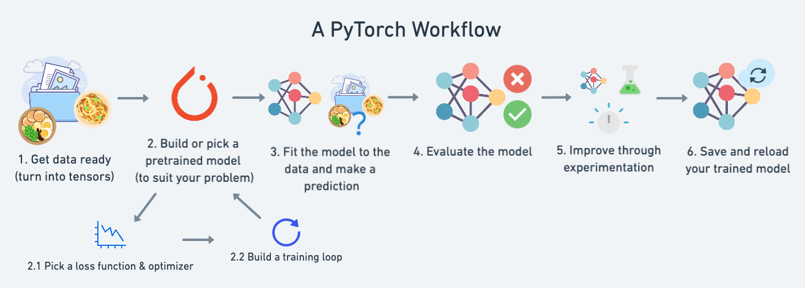
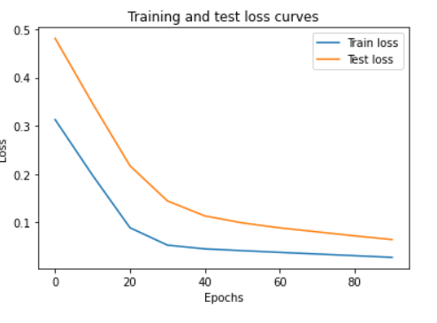

1、pyTorch 工作流程
内容
1. 准备数据处理好数据必须是张量格式来进行训练
2. 建立模型创建一个模型来学习数据中的模式，选择损失函数、优化器并构建训练循环。
3. 将模型拟合到数据（训练）我们已经有了数据和模型，现在让我们让模型（尝试）在（训练）数据中查找模式。
4. 进行预测并评估模型（推理）我们的模型在数据中发现了模式，让我们将其发现与实际（测试）数据进行比较。
5. 保存和加载模型您可能想在其他地方使用您的模型，或者稍后再回来使用它，我们将在此处介绍这一点。
6. 将所有内容放在一起让我们将以上所有内容结合起来。

二、建立模型
1. PyTorch 模型构建要点
PyTorch 有四个（给予或接受）基本模块，您可以使用它来创建您可以想象的几乎任何类型的神经网络。
它们是torch.nn、torch.optim、torch.utils.data.Dataset和torch.utils.data.DataLoader
以下通过torch.nn构建简单的模型
nn.Module包含较大的构建块（层）nn.Parameter包含较小的参数，例如权重和偏差（将它们放在一起构成nn.Module（s））forward()告诉较大的块如何在nn.Module（s）内对输入（充满数据的张量）进行计算torch.optim包含如何改进参数以nn.Parameter更好地表示输入数据的优化方法
2.线性回归模型(y = m*x + b)
# Create a Linear Regression model class
class LinearRegressionModel(nn.Module): # <- almost everything in PyTorch is a nn.Module (think of this as neural network lego blocks)
def __init__(self):
super().__init__()
self.weights = nn.Parameter(torch.randn(1, # <- start with random weights (this will get adjusted as the model learns)
dtype=torch.float), # <- PyTorch loves float32 by default
requires_grad=True) # <- can we update this value with gradient descent?)
self.bias = nn.Parameter(torch.randn(1, # <- start with random bias (this will get adjusted as the model learns)
dtype=torch.float), # <- PyTorch loves float32 by default
requires_grad=True) # <- can we update this value with gradient descent?))
# Forward defines the computation in the model
def forward(self, x: torch.Tensor) -> torch.Tensor: # <- "x" is the input data (e.g. training/testing features)
return self.weights * x + self.bias # <- this is the linear regression formula (y = m*x + b)
（1）.输出模型的状态
# Set manual seed since nn.Parameter are randomly initialzied
torch.manual_seed(42)
# Create an instance of the model (this is a subclass of nn.Module that contains nn.Parameter(s))
model_0 = LinearRegressionModel()
# Check the nn.Parameter(s) within the nn.Module subclass we created
list(model_0.parameters())
# List named parameters
model_0.state_dict()
（2）.构建损失函数和优化器
# Create the loss function
loss_fn = nn.L1Loss() # MAE loss is same as L1Loss
# Create the optimizer
optimizer = torch.optim.SGD(params=model_0.parameters(), # parameters of target model to optimize
lr=0.01) # learning rate (how much the optimizer should change parameters at each step, higher=more (less stable), lower=less (might take a long time))
（3）.模型预测
# 1. Set the model in evaluation mode
model_0.eval()
# 2. Setup the inference mode context manager
with torch.inference_mode():
# 3. Make sure the calculations are done with the model and data on the same device
# in our case, we haven't setup device-agnostic code yet so our data and model are
# on the CPU by default.
# model_0.to(device)
# X_test = X_test.to(device)
y_preds = model_0(X_test)
y_preds
三、训练模型
1.训练过程
| 数字 | 步骤名称 | 它有什么作用？ | 代码示例 |
|---|---|---|---|
| 1 | 前传 | 该模型一次遍历所有训练数据，执行其forward()函数计算。 |
model(x_train) |
| 2 | 计算损失 | 将模型的输出（预测）与真实情况进行比较并进行评估，以了解它们的错误程度。 | loss = loss_fn(y_pred, y_train) |
| 3 | 零梯度 | 优化器梯度设置为零（默认情况下会累积），因此可以针对特定训练步骤重新计算它们。 | optimizer.zero_grad() |
| 4 | 对损失执行反向传播 | 计算每个要更新的模型参数的损失梯度（每个参数带有requires_grad=True）。这称为反向传播，因此是“向后”。 |
loss.backward() |
| 5 | 更新优化器（梯度下降） | 更新关于损失梯度的参数requires_grad=True以改进它们。 |
optimizer.step() |

2.测试过程
| 数字 | 步骤名称 | 它有什么作用？ | 代码示例 |
|---|---|---|---|
| 1 | 前传 | 该模型一次遍历所有训练数据，执行其forward()函数计算。 |
model(x_test) |
| 2 | 计算损失 | 将模型的输出（预测）与真实情况进行比较并进行评估，以了解它们的错误程度。 | loss = loss_fn(y_pred, y_test) |
| 3 | 计算评估指标（可选） | 除了损失值之外，您可能还需要计算其他评估指标，例如测试集的准确性。 | 自定义功能 |

3.线性回归案例训练完整过程
torch.manual_seed(42)
# Set the number of epochs (how many times the model will pass over the training data)
epochs = 100
# Create empty loss lists to track values
train_loss_values = []
test_loss_values = []
epoch_count = []
for epoch in range(epochs):
### Training
# Put model in training mode (this is the default state of a model)
model_0.train()
# 1. Forward pass on train data using the forward() method inside
y_pred = model_0(X_train)
# print(y_pred)
# 2. Calculate the loss (how different are our models predictions to the ground truth)
loss = loss_fn(y_pred, y_train)
# 3. Zero grad of the optimizer
optimizer.zero_grad()
# 4. Loss backwards
loss.backward()
# 5. Progress the optimizer
optimizer.step()
### Testing
# Put the model in evaluation mode
model_0.eval()
with torch.inference_mode():
# 1. Forward pass on test data
test_pred = model_0(X_test)
# 2. Caculate loss on test data
test_loss = loss_fn(test_pred, y_test.type(torch.float)) # predictions come in torch.float datatype, so comparisons need to be done with tensors of the same type
# Print out what's happening
if epoch % 10 == 0:
epoch_count.append(epoch)
train_loss_values.append(loss.detach().numpy())
test_loss_values.append(test_loss.detach().numpy())
print(f"Epoch: {epoch} | MAE Train Loss: {loss} | MAE Test Loss: {test_loss} ")
（1）绘制训练测试的损失函数曲线
# Plot the loss curves
plt.plot(epoch_count, train_loss_values, label="Train loss")
plt.plot(epoch_count, test_loss_values, label="Test loss")
plt.title("Training and test loss curves")
plt.ylabel("Loss")
plt.xlabel("Epochs")
plt.legend();

四、加载保存模型
1.加载模型
from pathlib import Path
# 1. Create models directory
MODEL_PATH = Path("models")
MODEL_PATH.mkdir(parents=True, exist_ok=True)
# 2. Create model save path
MODEL_NAME = "01_pytorch_workflow_model_0.pth"
MODEL_SAVE_PATH = MODEL_PATH / MODEL_NAME
# 3. Save the model state dict
print(f"Saving model to: {MODEL_SAVE_PATH}")
torch.save(obj=model_0.state_dict(), # only saving the state_dict() only saves the models learned parameters
f=MODEL_SAVE_PATH)
2.保存模型
# Instantiate a new instance of our model (this will be instantiated with random weights)
loaded_model_0 = LinearRegressionModel()
# Load the state_dict of our saved model (this will update the new instance of our model with trained weights)
loaded_model_0.load_state_dict(torch.load(f=MODEL_SAVE_PATH))
五、所有内容整合
1.导入、pytorch、调用资源
# Import PyTorch and matplotlib
import torch
from torch import nn # nn contains all of PyTorch's building blocks for neural networks
import matplotlib.pyplot as plt
# Check PyTorch version
torch.__version__
# Setup device agnostic code
device = "cuda" if torch.cuda.is_available() else "cpu"
print(f"Using device: {device}")
2.模型引用资源model_1为例子
# Set model to GPU if it's availalble, otherwise it'll default to CPU
model_1.to(device) # the device variable was set above to be "cuda" if available or "cpu" if not
next(model_1.parameters()).device
2.数据集
（1）线性回归案例
# Create weight and bias
weight = 0.7
bias = 0.3
# Create range values
start = 0
end = 1
step = 0.02
# Create X and y (features and labels)
X = torch.arange(start, end, step).unsqueeze(dim=1) # without unsqueeze, errors will happen later on (shapes within linear layers)
y = weight * X + bias
# Split data
train_split = int(0.8 * len(X))
X_train, y_train = X[:train_split], y[:train_split]
X_test, y_test = X[train_split:], y[train_split:]
len(X_train), len(y_train), len(X_test), len(y_test)
3.建立模型
（1）构建损失优化器
# Create loss function
loss_fn = nn.L1Loss()
# Create optimizer
optimizer = torch.optim.SGD(params=model_1.parameters(), # optimize newly created model's parameters
lr=0.01)
（2）线性回归案例
# Subclass nn.Module to make our model
class LinearRegressionModelV2(nn.Module):
def __init__(self):
super().__init__()
# Use nn.Linear() for creating the model parameters
self.linear_layer = nn.Linear(in_features=1,
out_features=1)
# Define the forward computation (input data x flows through nn.Linear())
def forward(self, x: torch.Tensor) -> torch.Tensor:
return self.linear_layer(x)
# Set the manual seed when creating the model (this isn't always need but is used for demonstrative purposes, try commenting it out and seeing what happens)
torch.manual_seed(42)
model_1 = LinearRegressionModelV2()
model_1, model_1.state_dict()
4.训练模型
（1）线性回归案例
torch.manual_seed(42)
# Set the number of epochs
epochs = 1000
# Put data on the available device
# Without this, error will happen (not all model/data on device)
X_train = X_train.to(device)
X_test = X_test.to(device)
y_train = y_train.to(device)
y_test = y_test.to(device)
for epoch in range(epochs):
### Training
model_1.train() # train mode is on by default after construction
# 1. Forward pass
y_pred = model_1(X_train)
# 2. Calculate loss
loss = loss_fn(y_pred, y_train)
# 3. Zero grad optimizer
optimizer.zero_grad()
# 4. Loss backward
loss.backward()
# 5. Step the optimizer
optimizer.step()
### Testing
model_1.eval() # put the model in evaluation mode for testing (inference)
# 1. Forward pass
with torch.inference_mode():
test_pred = model_1(X_test)
# 2. Calculate the loss
test_loss = loss_fn(test_pred, y_test)
if epoch % 100 == 0:
print(f"Epoch: {epoch} | Train loss: {loss} | Test loss: {test_loss}")
5.评估模型
（1）线性回归案例
输出参数
# Find our model's learned parameters
from pprint import pprint # pprint = pretty print, see: https://docs.python.org/3/library/pprint.html
print("The model learned the following values for weights and bias:")
pprint(model_1.state_dict())
print("\nAnd the original values for weights and bias are:")
print(f"weights: {weight}, bias: {bias}")
预测
# Turn model into evaluation mode
model_1.eval()
# Make predictions on the test data
with torch.inference_mode():
y_preds = model_1(X_test)
y_preds
def plot_predictions(train_data=X_train,
train_labels=y_train,
test_data=X_test,
test_labels=y_test,
predictions=None):
"""
Plots training data, test data and compares predictions.
"""
plt.figure(figsize=(10, 7))
# Plot training data in blue
plt.scatter(train_data, train_labels, c="b", s=4, label="Training data")
# Plot test data in green
plt.scatter(test_data, test_labels, c="g", s=4, label="Testing data")
if predictions is not None:
# Plot the predictions in red (predictions were made on the test data)
plt.scatter(test_data, predictions, c="r", s=4, label="Predictions")
# Show the legend
plt.legend(prop={"size": 14});
# plot_predictions(predictions=y_preds) # -> won't work... data not on CPU
# Put data on the CPU and plot it
plot_predictions(predictions=y_preds.cpu())
6.保存加载模型
保存
from pathlib import Path
# 1. Create models directory
MODEL_PATH = Path("models")
MODEL_PATH.mkdir(parents=True, exist_ok=True)
# 2. Create model save path
MODEL_NAME = "01_pytorch_workflow_model_1.pth"
MODEL_SAVE_PATH = MODEL_PATH / MODEL_NAME
# 3. Save the model state dict
print(f"Saving model to: {MODEL_SAVE_PATH}")
torch.save(obj=model_1.state_dict(), # only saving the state_dict() only saves the models learned parameters
f=MODEL_SAVE_PATH)
加载
# Instantiate a fresh instance of LinearRegressionModelV2
loaded_model_1 = LinearRegressionModelV2()
# Load model state dict
loaded_model_1.load_state_dict(torch.load(MODEL_SAVE_PATH))
# Put model to target device (if your data is on GPU, model will have to be on GPU to make predictions)
loaded_model_1.to(device)
print(f"Loaded model:\n{loaded_model_1}")
print(f"Model on device:\n{next(loaded_model_1.parameters()).device}")